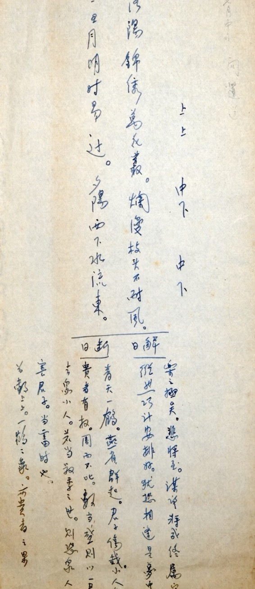

张爱玲对占卜的兴趣早在年少时已经显现出来，中学毕业前夕，她曾向同学们讨要照片，根据每个同学留给她的印象给大家配图片，她把自己画成看水晶球的预言者，在画纸上记录了三十五个女生未来可能的模样。年仅17岁便可以捕捉不同人的性格，在如同蛛丝一样的细节里自然地感知和好奇其命运的走向，我想这是一个天才作家的直觉，好的作家对他人的人生和故事永远有自然而然的，异常敏锐的觉察。
所谓预言，在此也并不是超自然的感知，而是基于对同学行为、性格、细节的实际观察，进行合乎性格逻辑的推演，构想出尚未发生但有可能发生的未来情景。
这就使得"预言"具有一种特殊的临界状态。它不完全是虚构，因为它根植于真实的人物性格；它也不等于现实，因为它描述的是尚未经验证的可能性。虚实交织，真假难辨，在张爱玲的思维模式里，世界本就是作为一个可供叙事加工的对象而被感知到的。回望她的一生，从少女时期到晚年，她都在现实与虚构的边界上生活与创作，由此也可以说，张爱玲是一个天生的作家，而《算命者的预言》就是她一生创作模式的缩影。
（《算命者的预言》其一，原载于1937年圣玛利亚女校校刊《凤藻）

后来张爱玲也常以牙牌签为自己占卜，问《秧歌》的命运，卜搬家出行的吉凶。这究竟是一种迷信，还是人到困境后的无奈之举？她是否真的相信占卜？其中是否存有怀疑的成分？荣格以"共时性"来解释占卜，认为是有意义的巧合。若回归一个作家的视角来看待这一问题，占卜或许也是一种感知方式。物在作家眼中，始终具有"叙述潜能"，它能承载情感，也能预示命运。在看似不相关的人与物之间，张爱玲从中所做的，是辨认出人与物之间更深层的同构。
她在私人笔记中记下赖雅离世后的一个细节：
"Ferd 死後象牙key ring tab[鑰匙扣牌忽斷]──鈿合釵分之感。"
—张爱玲的私人笔记簿
张爱玲写赖雅的离世如同牙牌断裂，有一种钿合钗分之感。分离的物与分离的人，在结构上彼此呼应。我想这不是synchronicity，而是因果。白居易在《长恨歌》里曾用此意象来写唐明皇和杨贵妃的分离："惟将旧物表深情，钿合金钗寄将去。钗留一股合一扇，钗擘黄金合分钿。"看似毫不相关的物却预言着生离死别，这是无常。百年后，张爱玲再度用这个意象来后-预言她和赖雅的死别。悲剧是永恒的，循环上演的，无常也是有常的。这里面因此有一种因果在，而不是有意义的巧合。而这种因果就是宇宙的节律，万事万物看似毫不相干，但其实都遵循着同一种天道。如此说，唐明皇和杨贵妃的故事又何尝不是一种倾城之恋呢？
也许这也是张爱玲所写的《倾城之恋》真正的含义。她在小说最后写道："香港的陷落成全了她。但是在这不可理喻的世界里，谁知道什么是因，什么是果？谁知道呢？也许就因为要成全她，一个大都市颠覆了。"一个世界倾覆了，成千上万的人死去，历史的巨轮碾过——这一切并非为了一段爱情而发生，但一段爱情好像却因这一切而得以成立。但天道自有其运转逻辑，人的悲欢离合不过是附着其上的偶然。
所谓真情，从来都是人间最深的幻觉。爱情的分合与一个世界，历史的颠覆新生看似毫无关系，但他们其实都遵循着天道。
而天道不可参破，于是有天问，有怅惘，有张爱玲所说的"大的悲哀在"。